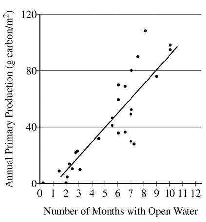

In the Arctic Ocean, the predominant primary
producers are phytoplankton. Phytoplankton
are consumed by zooplankton, which in turn are
eaten by codfish. In years when there is more
open water (less ice coverage), there are more
zooplankton and fish than in years with less open
water (more ice coverage). Based on the graph
above, the difference is most likely because
The graph shows the relationship between open water and primary productivity. Open water is related to ice coverage. The primary productivity ultimately rests on the biomass of the phytoplankton producers.
Photosynthetic organisms do well when there is an abundance of light energy.
Zooplankton are primary consumers and do not require light.
The warmth of the water may affect organism metabolism and size, but it does not explain productivity or number differences.
Ice reflects light and prevents light from reaching the water, so it does not increase primary productivity.